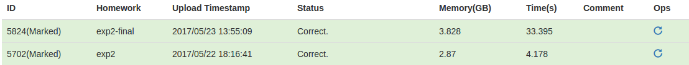

考虑对 和 两个集合中，对编辑距离小于等于 的字符串进行链接。
使用Partition-based算法，将 中的每个字符串按照张度平均拆分成 份，对于某 中的字符串 和 中的字符串 ，如果两者的编辑距离不超过 ，则 的 份字符串必定至少存在一份是 的字串。
为此，我们可以将 中的每个字符串按照分成的 个子串建立反向列表，然后对于 中的每个字符串，在反向列表中查询 中有哪些字符串的 子串出现在了待查询的字符串中，然后再对这些字符串进行过滤即可。
为了减小待过滤的字符串集合，可以增加一些限制：
Length-based，由于只有长度差不超过 的字符串才可能满足要求，所以可以只用检查 中与 长度差不超过 的字符串即可Shift-based，若 和 中的某段匹配了，则要求匹配位置之前和之后的字符串最小可能的编辑距离之和不超过 对于 中的字符串，我们可以对他们按照长度进行分组，相同长度的字符串划分成 份字符串的方式是相同的，然后再对 个不同位置的字符串分别用Hash建立反向列表。
具体来说， 表示长度为 的字符串的第 个子串的起始位置， 表示长度为 的字符串第 个子串的长度， 表示 中所有长度为 的字符串的第 段子串构成的反向列表。
对于一个查询的字符串 ，只需在 中查询即可，对于 中长度为 的字符串反向列表, 也只用枚举起点在 中的子串即可。
对于最后的过滤，使用一个动态规划即可。
考虑对 和 两个集合中，对Jaccard距离不小于 的字符串进行链接。
Jaccard定义如下：
其中 是 中某行字符串的单词集合, 类似;将上面的公式进行变换：
此公式表明，若要 和 之间Jaccard距离满足要求，则 的任意 个单词和 的任意 个单词必定存在一个完全相同的单词。
由此，我们先统计出每个单词在 和 出现的次数，然后对于 中的每个字符串 ，将其出现次数最少的 个单词放入反向列表，然后对于 中的每个字符串 ，将其出现次数最少的 个单词在反向列表中查询，对于查找到的结果在做一次过滤即可。